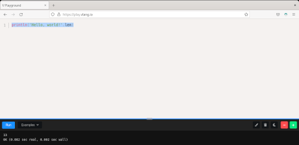

Ambiente para aprendizado
Escolhendo, e provavelmente configurando, um ambiente para aprendizado da linguagem V
Escolhendo um lugar para aprender
Anteriormente, nesse blog, experimentei a linguagem, de forma afoita, escrevendo um interpretador de Brainfuck:
https://paulohrpinheiro.xyz/texts/diversos/2021-04-18-brainf_ck-em-linguagem-v.html
e
Mas agora quero ir aos detalhes da linguagem.
Tenho um backlog com textos sobre a linguagem V, e quero deixar já resolvida a questão de como brincar na linguagem. Então aqui seguem alguns métodos para poder lidar com essa questão.
O Playground online
O mais fácil, é o playgraound online. basta acessar o endereço disponibilizado pelo site oficial da linguagem:
Porém, há um preço a se pagar: não estaremos em um shell (REPL - Read, Eval, Print, Loop). O que for digitado lá será compilado e não simplesmente avaliado e executado, portando, não teremos o benefício de uma resposta das expressões digitadas. Sempre se deve usar a função println(), como nesse exemplo:

Baixar o compilador compilado
Forcei a barra no termo "compilador". Quando se compila V, gera-se um binário apenas, como se pode imaginar, v, que tem múltiplas funções, dentre elas, de compilador e interpretador.
Pode-se baixar um pacote de:
E descompactar em /usr/local, por exemplo:
$ cd /usr/local
$ sudo unzip ~/Downloads/v_linux.zip
E ajustar a variável de ambiente PATH (acrescentar no arquivo ~/.bashrc):
export PATH=/usr/local/v:$PATH
Para ver se está tudo está funcionando:
$ v version
V 0.2.4 08667c5
Compilar o compilador localmente
Pode-se baixar o código-fonte e compilar localmente. Basta ter os pacotes de compilação instalados em sua máquina.
Instruções para cada plataforma estão em:
https://github.com/vlang/v/blob/master/doc/docs.md#install-from-source
No meu caso, um Fedora GNU/Linux, bastaram os comandos:
git clone https://github.com/vlang/v
cd v
make
Uma vez compilado, minha sugestão é adicionar o binário compilado ao PATH do seu ambiente. No meu caso, adicionei ao meu .bashrc a seguinte linha:
export PATH=~/repo/v:$PATH
Em que ~/repo/v é a localização do clone que fiz do repositório da linguagem em minha máquina.
Para saber se está tudo certo, além do comando export acima:
$ v version
V 0.2.4 3bb1c3f
Entremos no interpretador:
$ v
Welcome to the V REPL (for help with V itself, type exit , then run v help ).
NB: the REPL is highly experimental. For best V experience, use a text editor,
save your code in a main.v file and execute: v run main.v
V 0.2.4 3bb1c3f
Use Ctrl-C or exit to exit, or help to see other available commands
>>>
E vamos para um teste:
>>> println('Hello, world!'.len)
13
>>> 'Hello, world!'.len
13
>>>
Como se pode ver, não é necessária a função println().
Uma imagem docker
Por fim, a solução da moda. Pode-se baixar uma imagem docker, contendo o compilador, e usá-la localmente. Aqui está o endereço:
https://hub.docker.com/r/thevlang/vlang/
e o projeto:
https://github.com/vlang/docker
Vamos pegar a imagem com um pull:
$ docker pull thevlang/vlang
Using default tag: latest
latest: Pulling from thevlang/vlang
345e3491a907: Pull complete
57671312ef6f: Pull complete
5e9250ddb7d0: Pull complete
6121d3482abd: Pull complete
da03d038916f: Pull complete
d1636663eb2b: Pull complete
49a3d9c244d1: Pull complete
7f8f45f28e82: Pull complete
Digest: sha256:f2f2f6a23f9524d0e388919b6508407b20ef10c4f4755b370c478c718f62eac6
Status: Downloaded newer image for thevlang/vlang:latest
docker.io/thevlang/vlang:latest
Depois disso, pelo menos em meu caso, estou apenas com essa imagem:
$ docker images
REPOSITORY TAG IMAGE ID CREATED SIZE
thevlang/vlang latest 45c37aed7297 13 hours ago 784MB
Por fim, executemos essa imagem:
$ docker run -it --name v-container thevlang/vlang /bin/bash
root@8dc316e20594:/opt/vlang#
E o interpretador:
root@8dc316e20594:/opt/vlang# v
Welcome to the V REPL (for help with V itself, type exit , then run v help ).
NB: the REPL is highly experimental. For best V experience, use a text editor,
save your code in a main.v file and execute: v run main.v
V 0.2.4 3b61289
Use Ctrl-C or exit to exit, or help to see other available commands
>>> "agora no docker"[6..]
no docker
>>>
Caso a imagem já esteja em execução, ou queira abrir outro terminal, pode-se executar o seguinte comando:
docker attach v-container /opt/vlang/v
E já cai no shell da linguagem V.
Caso queira apagar a imagem, primeiro pare a execução:
docker rm v-container
e então procure o identificador da imagem (nesse caso 45c37aed7297):
$ docker images
REPOSITORY TAG IMAGE ID CREATED SIZE
thevlang/vlang latest 45c37aed7297 14 hours ago 784MB
para então apagá-la:
$ docker rmi 45c37aed7297
Untagged: thevlang/vlang:latest
Untagged: thevlang/ vlang@sha256:f2f2f6a23f9524d0e388919b6508407b20ef10c4f4755b370c478c718f62eac6
Deleted: sha256:45c37aed729760e4f85ec576b08b7126e7868430cb651a8b63c8362ad3e2167f
Deleted: sha256:eb12223919334d84fa2e07389bff2d48f3418ab39e283a055c6909dfde66f33c
Deleted: sha256:b60d87225dc013986774d523eedb1798195d5bdb218075070af9090bb03be82b
Deleted: sha256:6e84df1918f1cfe7916c5fb3689f56f460f949dae370785946be2c101f717cd2
Deleted: sha256:4e9a4223881bd83bdb4b859ae1626482f605c2170c3305bb47185dec67d488cb
Deleted: sha256:f6b7a0804d2d66f8e7ff53d011906c2e8c3c178f0498cfea0d9f9619abaecbd9
Deleted: sha256:3dd8c8d4fd5b59d543c8f75a67cdfaab30aef5a6d99aea3fe74d8cc69d4e7bf2
Deleted: sha256:8d8dceacec7085abcab1f93ac1128765bc6cf0caac334c821e01546bd96eb741
Deleted: sha256:ccdbb80308cc5ef43b605ac28fac29c6a597f89f5a169bbedbb8dec29c987439
O método que eu gostaria
Eu uso o asdf para instalar linguagens e suas diversas versões, mas não consegui fazer isso para a linguagem V, por conta de um erro de compilação.
O processo é, primeiro instala-se o plugin da linguagem:
asdf plugin-add v
Depois instala-se a linguagem, na versão desejada:
asdf install v latest
E indica-se que desejamos usar essa versão globalmente:
asdf global v latest
Mas pode ser que apenas "na minha máquina não funciona". Qualquer novidade, atualizações aqui e em minhas contas nas redes.